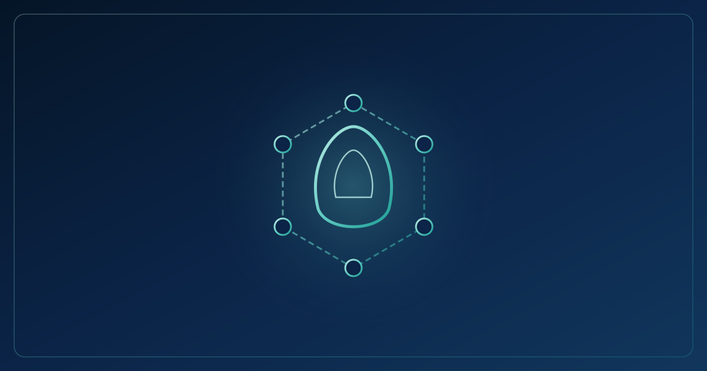
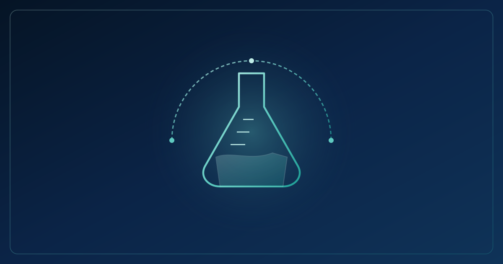
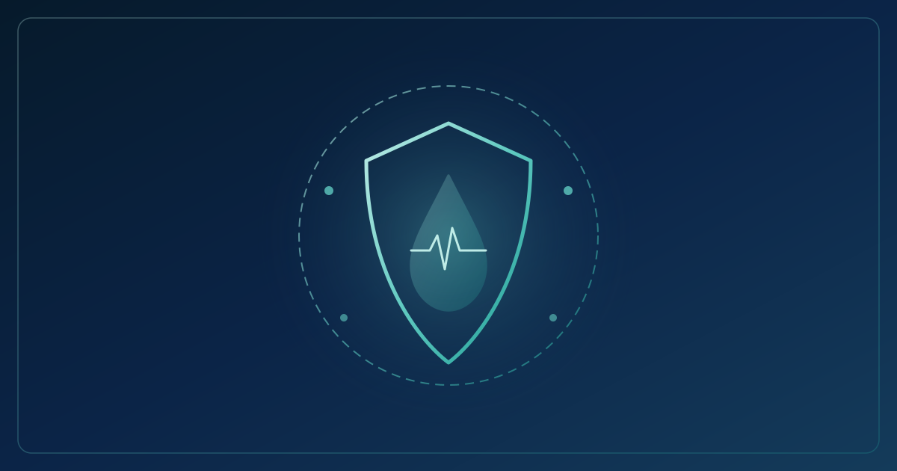
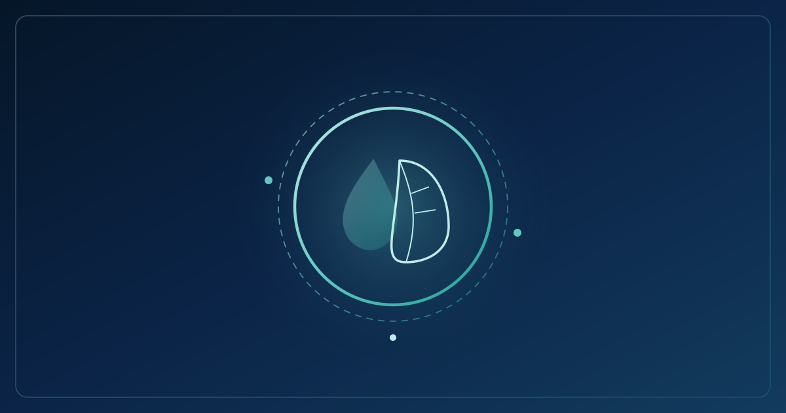

Early Warning Signs of Kidney Disease
Learn the subtle early clues of renal decline, from morning facial puffiness and foamy urine to unexplained fatigue, and when to seek medical testing.
Read Full GuideClear, medically sound guides on kidney function, early disease detection, dietary care, and preventive nephrology.
Empowering patients with reliable medical knowledge to safeguard long-term kidney vitality.

Learn the subtle early clues of renal decline, from morning facial puffiness and foamy urine to unexplained fatigue, and when to seek medical testing.
Read Full Guide
Understanding how chronic high blood glucose impacts glomeruli, why annual microalbuminuria screening is non-negotiable, and proven protective steps.
Read Full Guide
Exploring the bidirectional link between elevated blood pressure and kidney damage, how targeted BP control preserves renal microvessels, and daily targets.
Read Full Guide
Why kidney stones form, the truth about dietary calcium and oxalates, practical hydration rules in warm climates, and medical metabolic evaluations.
Read Full Guide
A reassuring, compassionate walkthrough of hemodialysis and peritoneal dialysis, debunking common myths and explaining how modern therapy restores vitality.
Read Full Guide
Actionable advice on managing sodium and processed foods, mindful protein intake, avoiding nephrotoxic over-the-counter painkillers, and staying active.
Read Full GuideSchedule a detailed, unhurried review with Dr. Jithin Lal at Amrutha Hospital, Kalamassery, Kochi.